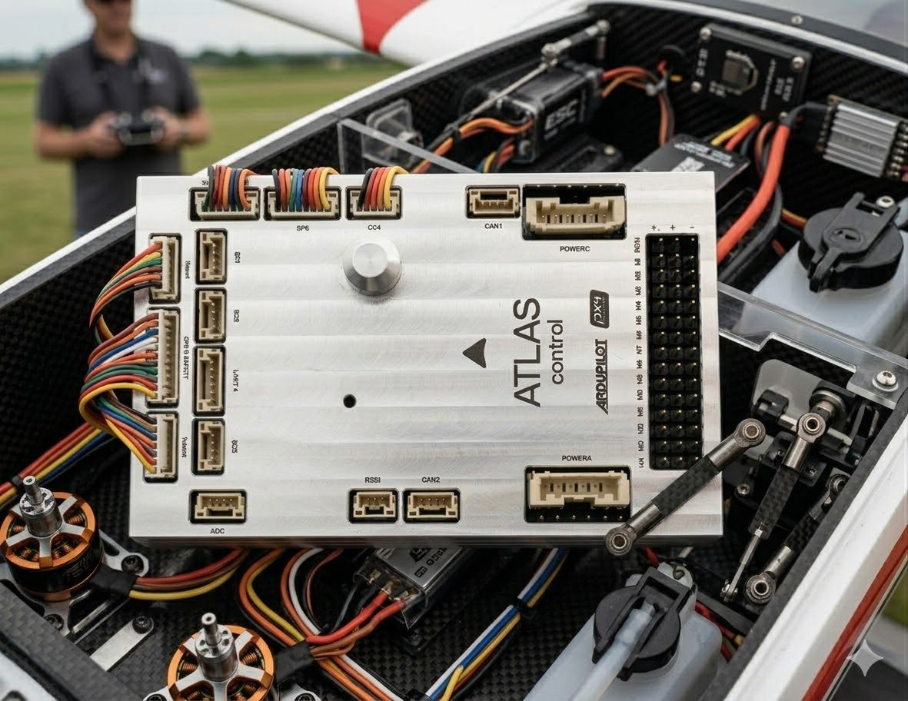
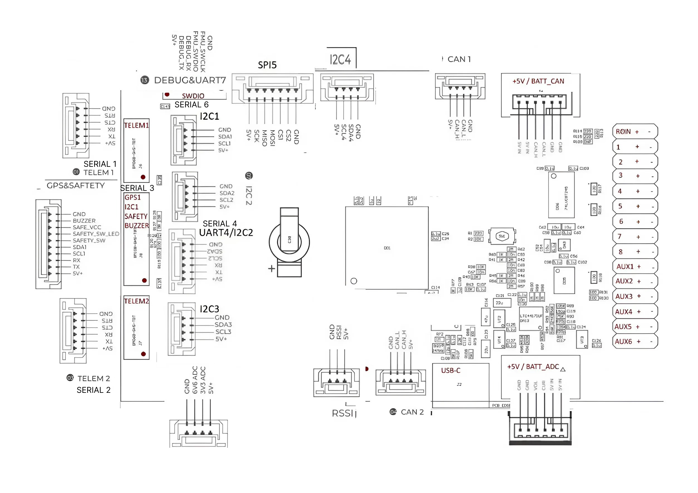

Atlas Control
Atlas Control — польотний контролер українського виробництва на базі процесора STM32H7 з сенсорами промислового класу. Повна сумісність з ArduPilot і PX4. Розроблений для академічних досліджень, комерційної інтеграції та оборонного застосування. Atlas Control is a Ukrainian-made flight controller based on the STM32H7 processor with industrial-grade sensors. Fully compatible with ArduPilot and PX4. Designed for academic research, commercial integration, and defense applications.


Вбудовані сенсориBuilt-in Sensors
| СенсорSensor | КомпонентComponent | ПризначенняPurpose |
|---|---|---|
| Акселерометр/Гіроскоп (основний)Accelerometer/Gyroscope (primary) | Залежить від моделіDepends on model | Основний IMUPrimary IMU |
| Акселерометр/ГіроскопAccelerometer/Gyroscope | ICM-42688-P | High-rate, для спідронівHigh-rate, for racers |
| Акселерометр/ГіроскопAccelerometer/Gyroscope | BMI088 | Вібростійкий, резервнийVibration-resistant, redundant |
| МагнітометрMagnetometer | RM3100 | КомпасCompass |
| БарометрBarometer | MS5611 ×2 | Висотометр (резервування)Altimeter (redundant) |
Різниця між моделямиModel Comparison
Всі моделі мають однакові додаткові IMU (ICM-42688-P + BMI088). Різниця лише в основному IMU: All models share the same secondary IMUs (ICM-42688-P + BMI088). The only difference is the primary IMU:
+ BMI088 (vibro)
+ BMI088 (vibro)
+ BMI088 (vibro)
+ BMI088 (vibro)
ІнтерфейсиInterfaces
| ІнтерфейсInterface | ДеталіDetails |
|---|---|
| PWM виходиPWM Outputs | 14 (12 з DShot)(12 with DShot) |
| RC вхідRC Input | SBUS / CPPM / DSM |
| RSSI | Аналоговий / PWMAnalog / PWM |
| GPS портиGPS Ports | 2 (GPS + UART4) |
| I2C | 6 шинbuses (4 спеціалізовані)(4 dedicated) |
| CAN Bus | 2 портиports |
| ЖивленняPower | Power A (ADC) + Power C (UAVCAN) |
| ADC | 1 вхідinput |
| USB | 1 портport |
Система живленняPower System
| ПараметрParameter | ЗначенняValue |
|---|---|
| Основне живленняMain power | 4.5 – 5.4 ВV |
| USB вхідUSB input | 4.75 – 5.25 ВV |
| Вхід сервоприводівServo rail input | 0 – 10 ВV |
| РозміриDimensions | 98 × 62 × 16 ммmm |
| ВагаWeight | 58 гg |
| ТемператураTemperature | −20 … +85 °C |

Налаштування FCFC Configuration
Базовий порядок UARTDefault UART Mapping
Серійні протоколи можна налаштовувати відповідно до власних уподобань — порти адаптуються для різних периферійних пристроїв. Serial protocols are fully configurable — ports adapt to various peripheral devices.
PWM виходиPWM Outputs
Контролер підтримує до 14 PWM-виходів. Усі 14 каналів підтримують стандартний PWM. Канали 1–12 також підтримують DShot, канали 13–14 — тільки PWM (без DMA). The controller supports up to 14 PWM outputs. All 14 channels support standard PWM. Channels 1–12 also support DShot; channels 13–14 support PWM only (no DMA).
Групування виходівOutput Groups
| ГрупаGroup | ВиходиOutputs | ПротоколиProtocols |
|---|---|---|
| ГрупаGroup 1 | 1, 2, 3, 4 | PWM + DShot + Bi-directional DShot |
| ГрупаGroup 2 | 5, 6, 7, 8 | PWM + DShot |
| ГрупаGroup 3 | 9, 10, 11, 12 | PWM + DShot |
| ГрупаGroup 4 | 13, 14 | PWM only (без DMA)(no DMA) |
GPIOs
Всі 14 виходів можна використовувати як GPIO (реле, кнопки, RPM тощо). Для цього встановіть
All 14 outputs can be used as GPIO (relays, buttons, RPM, etc.). Set
SERVOx_FUNCTION = -1.
Нумерація GPIO (ArduPilot)GPIO Numbers (ArduPilot)
Аналогові входиAnalog Inputs
Вхід RCRC Input
Пін RCIN підтримує всі RC-протоколи ArduPilot, окрім CRSF/ELRS та SRXL2 — вони потребують UART-з'єднання. Для CRSF та телеметрії FPort використовуйте SERIAL6 (UART7). The RCIN pin supports all ArduPilot RC protocols except CRSF/ELRS and SRXL2 — those require a UART connection. For CRSF and FPort telemetry use SERIAL6 (UART7).
Налаштування SERIAL6 для RCSERIAL6 Configuration for RC
Моніторинг батареїBattery Monitor
В комплекті постачається аналоговий PMU (до 14S). Підключіть до роз'єму Power A і встановіть параметри: An analog PMU (up to 14S) is included. Connect to the Power A port and set the parameters:
Firmware
Завантажте прошивку для вашої версії ArduPilot: Download firmware for your ArduPilot version:
Що в комплектіWhat's in the Box
Стандартна комплектація Atlas Control включає контролер та всі необхідні кабелі для підключення. Standard Atlas Control kit includes the controller and all necessary connection cables.
КонтролерController
| 1× |
Польотний контролер Atlas ControlAtlas Control Flight Controller
|
| 1× | Аналоговий модуль живлення PMU (до 14S)Analog power module PMU (up to 14S) |
КабеліCables
| 2× | Кабель живленняPower cable |
| 2× | JST-GH 1.25ммmm 6-pin (двостороннійreversible) |
| 1× | JST-GH 1.25ммmm 3-pin |
| 4× | JST-GH 1.25ммmm 4-pin |
| 2× | JST-GH 1.25ммmm 6-pin |
| 1× | JST-GH 1.25ммmm 7-pin (FTDI-кабель для Debug PortFTDI cable for Debug Port) |
| 1× | JST-GH 1.25ммmm 10-pin |
| 1× | СервокабельServo cable |